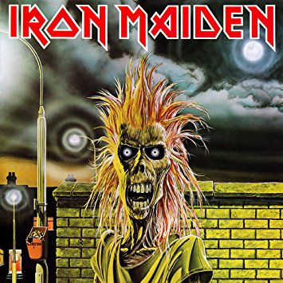

Page 2
Eddie the Head ou Edward the Head é o mascote da banda de heavy metal Iron Maiden. Cada álbum da banda possui uma encarnação diferente do morto-vivo. O desenhista Derek Riggs se baseou em uma propaganda de guerra publicada durante a Guerra do Vietnã para desenhar sua primeira versão.
“Eddie tinha nascido sem corpo, braços e pernas. Só tinha a cabeça. Mas tirando esse problema de nascimento seus pais o amavam muito. No seu décimo-sexto aniversário eles foram a um médico que lhes disse que poderia dar um corpo ao garoto. Os pais ficaram malucos com a novidade porque seu filho poderia finalmente ser uma pessoa normal. Eles voltaram para casa e falaram para Eddie: “Nós temos uma surpresa para você. É o melhor presente do mundo!” e Eddie respondeu: “Ah não, outro boné não!”.
Pode não parecer muito engraçada, mas foi daí que surgiu a primeira ideia para o nome. A segunda contribuição, como conta Steve Harris, veio do sotaque londrino. “Head” soava como “Ead”, que logo foi adaptado para Eddie. Eddie The Head estava enfim “registrado”.
Agora com a presença de um corpo, a banda recorreu a Derek Riggs para os desenhos. No primeiro álbum, intitulado de Iron Maiden também, o Iron estreou para o mundo suas composições. Atitude punk misturada com a musicalidade do heavy metal, Eddie apareceu na primeira capa na forma de um zumbi maligno:

Capa do álbum "Iron Maiden", primeiro disco da banda
Voltar